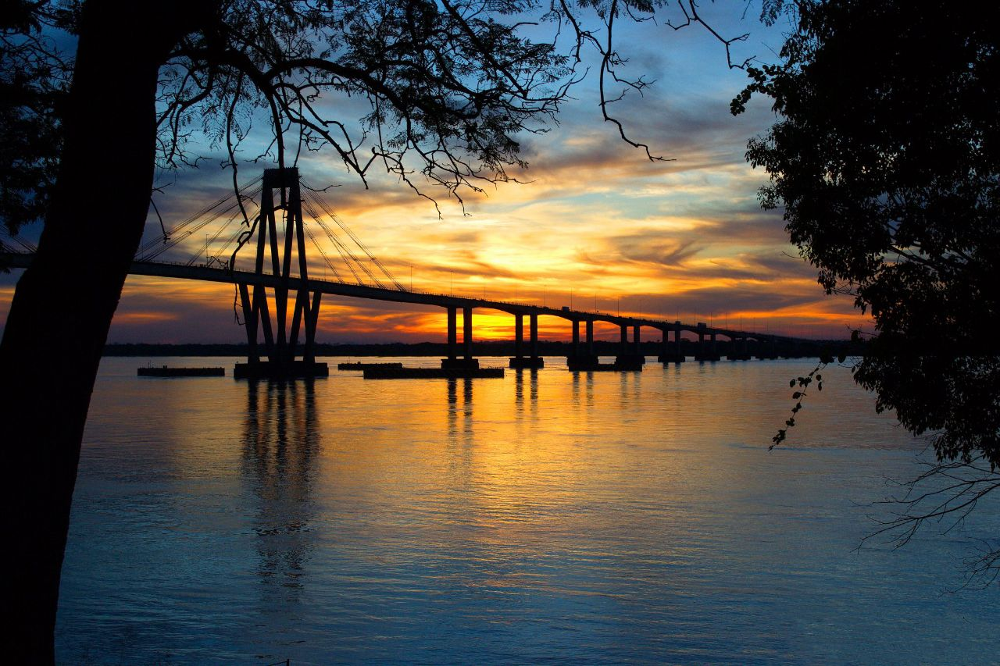

Cataratas del Iguazú
Las Cataratas del Iguazú son una de las Siete Maravillas Naturales del Mundo y uno de los destinos turísticos más populares de Argentina. Las cataratas se encuentran en el límite entre Argentina y Brasil y están formadas por 275 saltos que caen desde una altura de hasta 80 metros.

Esteros del Iberá
Los Esteros del Iberá son el segundo humedal más grande de Sudamérica y un importante refugio de vida silvestre. Los esteros albergan una gran variedad de animales, incluidos carpinchos, ciervos, tapires, yacarés y aves.
Parque Nacional El Palmar
El Parque Nacional El Palmar es un parque nacional ubicado en la provincia de Entre Ríos. El parque es famoso por su bosque de palmeras, que es uno de los más grandes del mundo. El parque también cuenta con una gran variedad de otros paisajes, como ríos, arroyos y llanuras.
Ciudad de Corrientes
La ciudad de Corrientes es la capital de la provincia de Corrientes. La ciudad es conocida por su arquitectura colonial, su vida nocturna animada y su gastronomía regional.
